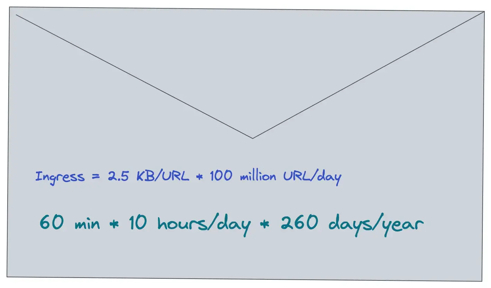
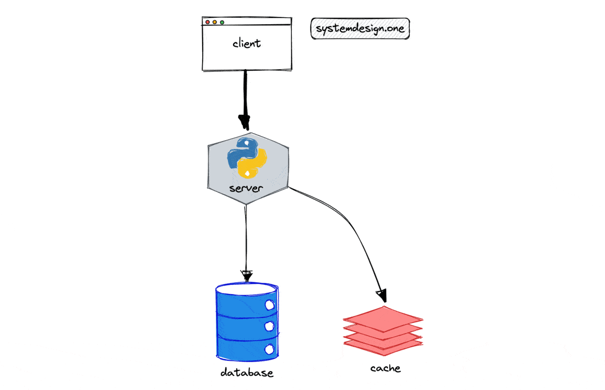
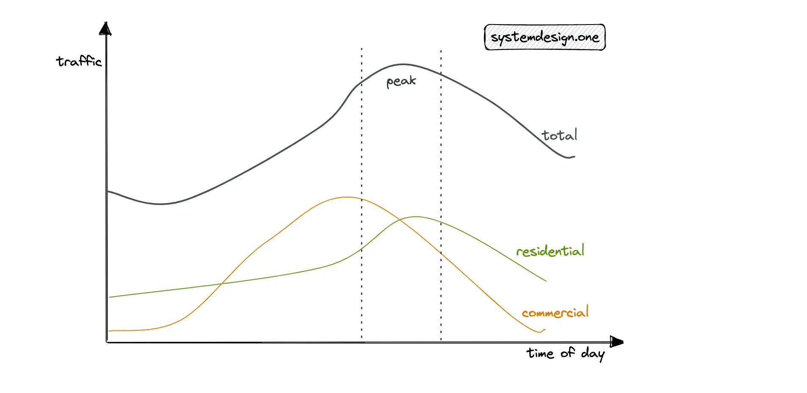
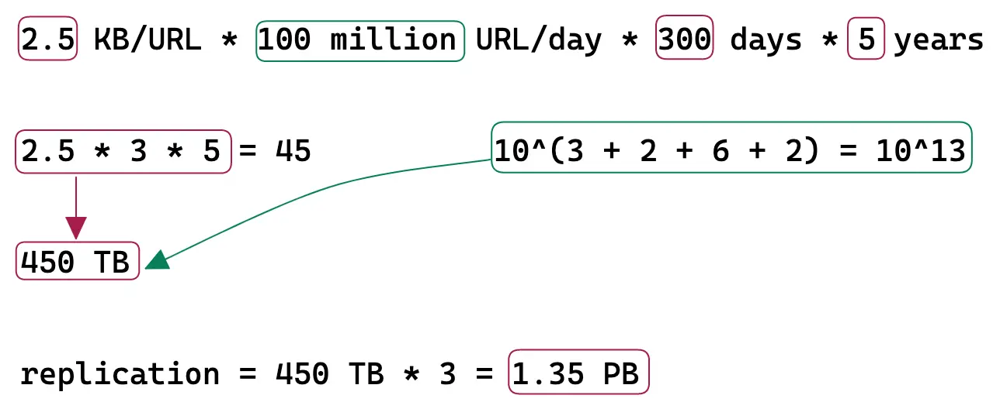
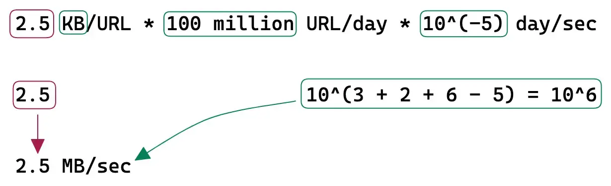
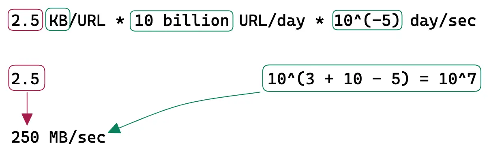
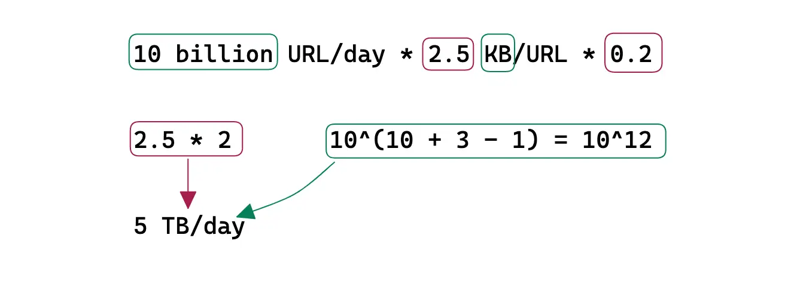

Back of the Envelope
Capacity Planning System Design

The target audience for this article falls into the following roles:
- Tech workers
- Students
- Engineering managers
Download my system design playbook for free on newsletter signup:
What is a Back of the Envelope Calculation?
The back of the envelope are estimates generated using a combination of thought experiments and performance numbers through simple arithmetic. The performance numbers of the services involved should be known to conduct back of the envelope calculation. The unknown performance numbers can be determined through prototyping. For instance, measuring the write performance of the cache server can be determined through a prototype 1.
The back of the envelope calculation is commonly used to evaluate different architectural designs. Although the optimal design depends on the system requirements, the back of the envelope calculation provides an opportunity to compare different architectural designs without prototyping. In layman’s terms, back of the envelope analysis is a framework for comparing different variants of architectural design 1.
The back of the envelope calculation is also known as capacity planning. In general, measuring system performance and performing back of the envelope is important in any deployment to satisfy the service level agreement (SLA) 2. The following are some of the popular reasons to perform back of the envelope calculations:
- decide whether the database should be partitioned
- evaluate the feasibility of a proposed architectural design
- identify potential bottlenecks in the system
Understanding a Back of the Envelope Calculation
The back of the envelope calculation should be performed for efficient resource management and to meet scalability requirements 3. The different approaches to scaling a web service are the following:
- vertical scaling
- horizontal scaling
- diagonal scaling
Vertical scaling is achieved by increasing the number of CPU cores, memory, and disk storage on a single server. However, the server will reach a point of saturation where increasing the number of components does not further increase the throughput.
Horizontal scaling is the method of adding multiple machines to scale the web service. The drawback of horizontal scaling is increased complexity.
Diagonal scaling is a combination of both vertical and horizontal scaling. Diagonal scaling brings the best of both worlds by increasing or upgrading the components on a single server and replicating the server. Diagonal scaling offers relatively better performance and a reasonable price.
The back of the envelope calculation allows you to identify the sweet spot between diagonal scaling and a feasible price point. The following concepts should be well understood to perform a quick back of the envelope calculation:
- powers of two
- availability numbers
- latency numbers every programmer should know
Powers of Two
The power of two is a handy reference to perform the back of the envelope.
| Power | Exact Value | Approx Value | Bytes |
|---|---|---|---|
| 7 | 128 | ||
| 8 | 256 | ||
| 10 | 1024 | 1 thousand | 1 KB |
| 16 | 65,536 | 64 KB | |
| 20 | 1,048,576 | 1 million | 1 MB |
| 30 | 1,073,741,824 | 1 billion | 1 GB |
| 32 | 4,294,967,296 | 4 GB |
A byte is a unit of digital information that consists of 8 bits. The data size of the most commonly used data types can be helpful for the back of the envelope 4, 5.
| Data Type | Size (byte) |
|---|---|
| int | 4 |
| float | 8 |
| boolean | 4 |
| UTF-8 character | 1 |
| UTF-8 in Chinese | 3 |
| UNIX timestamp | 4 |
Availability Numbers
High availability is the ability of a service to remain reachable and not lose data even when a failure occurs. High availability is typically measured in terms of a percentage of uptime over a given period. The uptime is the amount of time that a system or service is available and operational.
| Availability (percentage) | Downtime per year |
|---|---|
| 99 | 3.6 days |
| 99.99 | 52 minutes |
| 99.999 | 5 minutes |
| 99.9999 | 31 seconds |
In addition to measuring uptime, high availability can also be measured by other metrics such as mean time between failures (MTBF), which measures the average time between system failures, and mean time to repair (MTTR), which measures the average time it takes to restore a system after a failure.
A service-level agreement (SLA) is an explicit or implicit contract between a service provider and the users. The SLA documents the set of services the service provider will offer to the user and defines the service standards the provider is obligated to fulfill.
Latency Numbers Every Programmer Should Know
The interactive latency tool can be used to visualize the latency of components and operations. The numbers shown are supposed to give a rough idea of the latency of different operations 6, 4, 7.
| Operation | Time |
|---|---|
| L1 cache reference | 0.5 ns |
| Branch mispredict | 5 ns |
| L2 cache reference | 7 ns |
| Mutex lock/unlock | 25 ns |
| Main memory reference | 100 ns |
| Compress 1K bytes with Zippy | 10 us |
| Send 1 KB bytes over 1 Gbps network | 10 us |
| Read 4 KB randomly from SSD* | 150 us |
| Read 1 MB sequentially from memory | 250 us |
| Round trip within same datacenter | 500 us |
| Read 1 MB sequentially from SSD* | 1 ms |
| HDD seek | 10 ms |
| Read 1 MB sequentially from 1 Gbps | 10 ms |
| Read 1 MB sequentially from HDD | 30 ms |
| Send packet CA->Netherlands->CA | 150 ms |
Useful Conversions
| Time | Time (seconds) |
|---|---|
| 1 ns | 10^-9 seconds |
| 1 us | 10^-6 seconds |
| 1 ms | 10^-3 seconds |
The latency numbers can be summarized as the following 1:
- memory is fast and disks are slow
- network bandwidth can be saved by using a compression algorithm
- writes are more expensive than reads
- globally shared data is expensive
- at most 7 round trips between inter-region data centers per second are possible
- approximately 2000 round trips per second can be achieved within a data center
Further System Design Learning Resources
Download my system design playbook for free on newsletter signup:
Back of the Envelope Calculation in System Design Interview
The back of the envelope calculation is not mandatory during a system design interview. You should discuss with your interviewer whether back of the envelope calculations are required. The back of the envelope calculations should not take more than five minutes of your system design interview unless stated by the interviewer.
You can visit similarweb.com to determine the approximate traffic of popular websites across the internet. It is reasonable to ask the interviewer for the Query per second (QPS) during requirements clarification to make the back of the envelope calculation easier.

The back of the envelope analysis is supposed to be approximate and is based on assumptions. You are expected to make informed decisions and discuss trade-offs based on the back of the envelope calculations.
Tips for Back of the Envelope Calculations
The back of the envelope calculation is about evaluating your problem-solving skills in the system design interview. The following tips can be helpful for back of the envelope calculation 5, 8, 9:
- rounding and approximation of numbers (For example, 83 becomes 100)
- label the units for easy calculation
- always convert to operations per second
- 1 million requests/day = 12 requests/second
- explicitly specify the assumptions
- use numbers along with an abbreviation for the magnitude (1000 = 1K)
You should make reasonable assumptions, ask clarifying questions and communicate your thought process with the interviewer to achieve success in the system design interview.
Why Is the Back of the Envelope Analysis Important?
The back of the envelope analysis is important due to the following reasons 6, 1, 8:
- evaluating different architectural designs
- validating the proposed architectural design
- uncovering bottlenecks
- ensuring high availability
- improving cost efficiencies
- meeting SLAs
- providing insights into hot workflows and traffic spikes
- predicting system capacity requirements
Types of Back of the Envelope Calculations in System Design Interviews
The most common types of back of the envelope calculations in system design interviews are the following:
- traffic estimation
- storage estimation
- memory estimation
- bandwidth estimation
- resource estimation
- latency estimation
Latency Estimation
When an API endpoint should merge data from multiple resources and the data fetching process is sequential, the latency is calculated as follows:
When an API endpoint should merge data from multiple resources and the data fetching process is parallel, the latency is calculated as follows:
Resource Estimation
You can assume that a modern server contains 32 cores and the system latency should be less than 250 ms for a real-time experience. The CPU frequency (GHz) impacts the performance of the service but is not relevant for the back of the envelope calculation. The following formula is used to calculate the Query per second (QPS) given the number of CPU cores and CPU time per second 10:
The initial design should focus on supporting the average traffic because it is the usual condition. The peak traffic must also be considered to make the system fault tolerant and highly available. The different approaches to determining peak traffic are the following 5:
- 10% per hour rule
- peak traffic = 2 * average traffic

With the 10% per hour rule, when daily traffic is 1 million, you can assume that 10% of the daily traffic occurs within 1 hour. This would result in approximately 30 QPS. Alternatively, you should discuss with your interviewer whether it’s fine to assume the peak traffic to be twice the average traffic.
Back of the Envelope Calculation Example
The following is the back of the envelope calculation for a URL shortener.
Traffic
The URL shortener is a read-heavy service. The Daily Active Users (DAU) for writes is 100 million. The Query Per Second (QPS) of reads is approximately 100 thousand.
| Description | Value |
|---|---|
| DAU (write) | 100 million |
| QPS (Write) | 1000 |
| read: write | 100: 1 |
| QPS (read) | 100 thousand |
| time of persistence for a URL | 5 years |
Storage
The shortened URL persists by default for 5 years in the data store. Each character size is assumed to be 1 byte. A URL record is approximately 2.5 KB in size. Set the replication factor of the storage to a value of at least three for improved durability and disaster recovery.

Bandwidth
Ingress is the network traffic that enters the server (client requests).

Egress is the network traffic that exits the servers (server responses).

Memory
The URL redirection traffic (egress) is cached to improve the latency. Following the 80/20 rule, 80% of egress is served by 20% of URL data stored on the cache servers. The remaining 20% of the egress is served by the data store to improve the latency. A Time-to-live (TTL) of 1 day is reasonable.

Real World Back of the Envelope Calculations
Fermi estimation is a method for arriving at an estimate of an uncertain variable of interest. More architectural designs can be evaluated when cheap and quick reasonable estimates of the numbers can be made 9.
The performance of a system is not directly proportional to the system’s capacity. In layman’s terms, the performance of the system depends on the asymptotic complexity of the system implementation. The service should be monitored and benchmarked to perform back of the envelope analysis. For example, it is necessary to know whether the load is read or write heavy, and the rate of concurrency to scale a database 11.
If you are hosted on the cloud, the service tiers 0 and 1 should be used for the production load to attain high performance. Service tiers 2 and 3 should be used for the testing load to reduce costs. The system can be configured to switch to a different instance type when the current instance type capacity is fully utilized 12.
The historical metrics are required to make an educated forecast. The system-level and application-level statistics make up the historical metrics. The estimation provided by the marketing or product team should also be combined with the historical metrics to determine a robust forecast 3.
The linear regression model for forecasting the traffic will not capture the seasonality of the time series. However, in the absence of seasonality, the linear regression model is preferred as it is computationally less expensive than other models. The ARIMA models can be used to explicitly model trend and seasonality in time series for robust forecasts 13. The system should degrade gracefully when the capacity limits are exceeded. The following methods can be used for graceful degradation of the service 3:
- disable heavy load features
- cache dynamic content into static bits
- serve stale content
The QPS limit of the services should be tested with production traffic or recorded and replayed production load. On the other hand, the time and effort to run a simulation are wasted because the application logic evolves quickly. On top of that, you should not over-provision the servers to handle peak traffic to save costs and reduce operational complexity 3.
What Does Real World Back of the Envelope Calculation Involve?
The real-world back of the envelope calculation involves the following 14:
- provision performance environment
- determine the single host load pattern
- develop and run load tests
- analyze and extrapolate results
The tools for back of the envelope calculation are the following 15:
- load and capacity testing
- stress and volume testing
Locust is a popular tool for load testing. The perfect parity with production makes a good load test. The production data can be scrubbed to synthetically generate the production load. In addition, the following metrics should be monitored during a load test 14:
- client-side metrics (error rate, latency)
- server-side metrics (response time, CPU, memory, thread counts)
- auto-scaling trigger frequency
Summary
The back of the envelope calculation is a vital skill for software engineers preparing for the system design interview. By taking a proactive approach through the back of the envelope analysis, you can overcome the potential bottlenecks and meet the SLAs in real-world architectural design.
What to learn next?
Download my system design playbook for free on newsletter signup:
License
CC BY-NC-ND 4.0: This license allows reusers to copy and distribute the content in this article in any medium or format in unadapted form only, for noncommercial purposes, and only so long as attribution is given to the creator. The original article must be backlinked.
References
-
Google Pro Tip: Use Back-Of-The-Envelope-Calculations To Choose The Best Design (2011), highscalability.com ↩︎
-
Mat Keep, Preparing for Your First MongoDB Deployment: Capacity Planning and Monitoring (2013), infoq.com ↩︎
-
How To Succeed At Capacity Planning Without Really Trying : An Interview With Flickr’s John Allspaw On His New Book (2009), highscalability.com ↩︎
-
System Design Primer, GitHub.com ↩︎
-
Shawn Bullock, How I calculate capacity for Systems Design (2020), dev.to ↩︎
-
Jeffrey Dean, Building Software Systems At Google and Lessons Learned (2010), Stanford ↩︎
-
Numbers Everyone Should Know (2009), highscalability.com ↩︎
-
Robin Palotai, Back of the Envelope Calculation for System Design Interviews (2019), codementor.io ↩︎
-
Carlos Bueno, The Estimation Game - Techniques for Informed Guessing (2015), infoq.com ↩︎
-
Erlend Eide, How to Estimate How Many Website Visitors Your Hosting Can Deal With (2022), servebolt.com ↩︎
-
John Allspaw, Capacity Management for Web Operations (2008), slideshare.net ↩︎
-
Capacity plan optimally in the cloud (2022), AWS Events ↩︎
-
Manuel Pais, Forecasting at Twitter (2013), infoq.com ↩︎
-
Laxmi Nagarajan, A quick how-to on capacity planning for an application deployed in AWS (2017), Hasgeek TV ↩︎
-
Jordan Sitkin, Luke Demi, Capacity Planning for Crypto Mania (2019), infoq.com ↩︎